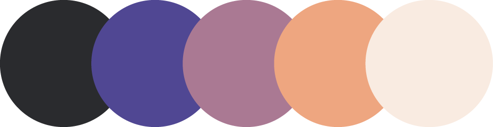

De l'imaginaire
au papier
Pour mon projet de recherche, je souhaitais apprendre un nouveau logiciel de 3D, Cinema 4D. Étant un des standards dans l'industrie de la publicité, j'ai donc choisi d'en réaliser une pour une marque de marqueurs fictive, nommée KREATIV. Pour ce faire, j'ai réalisé l'identité visuelle de la marque, j'ai appris le logiciel sous plusieurs de ses aspects (modélisation, textures, éclairage, système de particules et animation), puis j'ai monté le tout sur After Effects.
Image
Tout d'abord, j'ai conçu l'identité visuelle de KREATIV. Je souhaitais que, comme son nom l'indique, la marque se démarque au niveau de la créativité de ses produits. C'est donc pour cela que l'image de cette dernière est très colorée, pétillante et invitante. Mes principales inspirations ont été les metaballs, l'effet demi-teinte, ainsi que le neumorphisme. Pour ce qui est des étiquettes, je souhaitais que chacune d'entre elles fassent des références subtiles à l'été, telles que des vagues, des rayons de soleil, etc.
Palette de couleurs

Effet demi-teinte

Étiquettes des crayons
Étiquette de la boîte
Cinema 4D
Ensuite, j'ai appris à utiliser le logiciel Cinema 4D. Afin de faciliter le flux de travail, j'ai divisé mon projet en trois scènes distinctes: la première étant celle d'ouverture, la deuxième est celle dans laquelle les crayons dessinent sur le papier, puis la troisième est celle dans laquelle les crayons vont dans leur boîte.
Modélisation
Étant l'objet mis en avant dans ma publicité, j'ai dû modéliser un crayon. Pour ce faire, j'ai pris en photo des crayons dont j'aimais bien la forme, puis je m'en suis inspirée afin de réaliser un croquis pour celui que j'ai modélisé. Puis, j'ai aussi modélisé la boîte d'emballage pour ces derniers.
Textures
Pour les textures, je suis allée vers des matériaux rappelant du plastique. J'y ai aussi intégré les étiquettes que j'ai réalisé sur Illustrator.
Éclairage et décors
Comme mentionné plus haut, j'ai séparé mon projet en trois scènes distinctes. Chacune d'entre elles réutilisent le même arrière-plan et le même éclairage de base, seules les lumières de type backlight ont été modifiées ou déplacées. De plus, pour la première scène, j'ai aussi créé un système de particules afin de rendre le décor plus intéressant.
Quelques images
Montage
Pour le montage de la publicité, j'ai choisi d'utiliser le logiciel After Effects afin de pouvoir ajouter davantage d'animations. J'ai notamment aussi créé divers masques appliqués sur les objets afin de créer des transitions intéressantes et dynamiques.